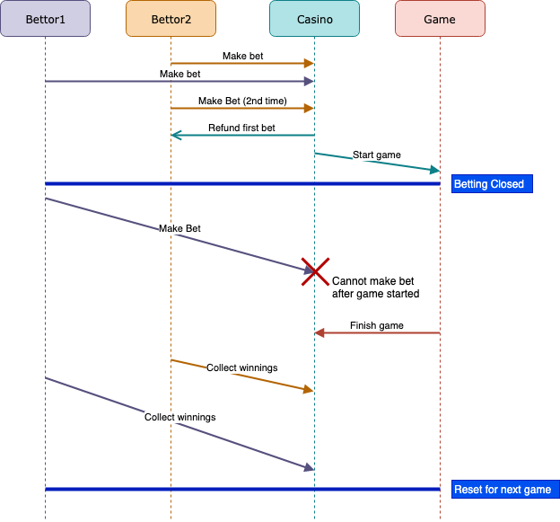
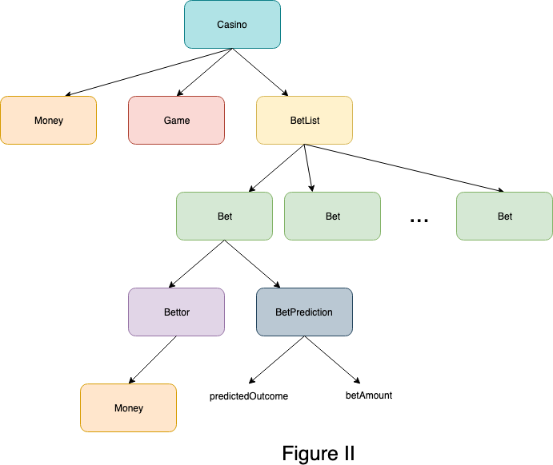

At a high level, you will need to implement a Casino such that Bettors will make bets (they put down some
Money and make a Bet
for the predicted outcomeof a Game), and afterward, Money is given to the Bettors who bet correctly.
Note that the logic of the game itself doesn't matter, a generic Game is given in the helper code below.
However, keep in mind that a Game has certain states in which certain actions can take place,
and calculateOutcome() returns the outcome of the game.
This is a very small Casino; only one Game can be played at at time, and Bets will
be taken for that game. Once the Game is over,
bets can be taken for the next Game, and the new Game is played. An example sequence of events over the course of one Game
is given to you in the Figure I below (more explanation about making a Bet is given in the Requirements).

The Casino contains the current Game being played, as well as a list of Bets on that game.
A Bet consists of the Bettor making the bet prediction, and the BetPrediction itself.
The relationships between the objects are shown in Figure II below. Declarations for each of these objects are given in the
"Helper Code Declarations" section (Full implementations can be viewed in betting_utils.obs).

Implement the Casino contract however you would like following this overview.
The following requirements must be met.
Requirements:
Bettor predicts the outcome correctly, the Bettor gets twice the Money they put down.
For example, if Bettor b puts down $5 on the correct outcome, they should receive $10 after the Game is played. Bettor predicted incorrectly, they lose the money they originally bet; they get nothing back.Game.Money should not be distributed back to Bettors until after a Game is played.Bettors must bet on one particular Game at a time.Bettors should collect winnings from the Casino after a Game. If a Bettor who
accurately predicted the outcome of a Game does not collect their Money before the next Game,
this Money is kept by the Casino. Bettor can only bet once per game; if the Bettor bets more than once, their original bet
should be replaced by the new one. Bettor MUST put down Money at the same time that they're making a Bet:
this Money should go to the Casino.Casino should have the ability to start a new Game once the current one is finished.Bettors do not need to be registered; you can assume any Bettor can make a BetCasino will always have enough money to pay Bettors.The full implementations can be viewed in betting_utils.obs
//Represents the money being traded in this program
asset contract Money {
int amount; //Amount that this Money object holds
//Constructor
Money@Owned(int amt);
//Add additional Money
transaction mergeMoney(Money@Owned this, Money@Owned >> Unowned m);
//Returns the amount of this Money
transaction getAmount(Money@Owned this) returns int;
//Use some amount of this Money
transaction splitMoney(Money@Owned this, int amt) returns Money@Owned;
}
//Represents the bet prediction of a Bettor
contract BetPrediction {
string predictedOutcome; //the Bettor's prediction of the winning outcome
int betAmount; //the amount of money the Bettor put down on this BetPrediction
//Constructor
BetPrediction@Owned(string predOut, int amount);
//Returns the predicted outcome
transaction getPredOutcome(BetPrediction@Unowned this) returns string;
//Returns the betAmount
transaction getBetAmount(BetPrediction@Unowned this) returns int;
}
//Represents a person betting on a game
asset contract Bettor {
Money@Owned money; //Total Money the Bettor owns
//Constructor
Bettor@Owned();
//Take some Money out of the Bettor's total money
transaction withdrawMoney(Bettor@Owned this, int amount) returns Money@Owned;
//Adds Money to the Bettor's total money
transaction receiveMoney(Bettor@Unowned this, Money@Owned >> Unowned m);
}
//Represents a single bet
contract Bet {
Bettor@Unowned bettor; //The Bettor making the bet
BetPrediction@Unowned prediction; //The BetPrediction for the winner
//Constructor
Bet@Owned(Bettor@Unowned b, BetPrediction@Unowned p);
//Returns a reference to the Bettor making the bet
transaction getBettor(Bet@Unowned this) returns Bettor@Unowned;
//Returns a reference to the BetPrediction the Bettor made
transaction getBetPrediction(Bet@Unowned this) returns BetPrediction@Unowned;
}
//Represents a container of Bets
contract BetList {
//Constructor
BetList@Empty();
//Add a new Bet to the end of the list
transaction append(Bet@Unowned newB);
//remove a Bet with a given Bettor reference, and return that Bet
transaction popSpecific(Bettor@Unowned bettor) returns Bet@Unowned;
//returns true if a Bet has been placed by a Bettor
transaction contains(Bettor@Unowned bettor) returns bool;
}
//Represents a generic game
contract Game {
state BeforePlay;
state Playing;
state FinishedPlaying;
//Constructor
Game@BeforePlay();
//Start the game
transaction startPlaying(Game@BeforePlay >> Playing this);
//Finish the game
transaction finishPlaying(Game@Playing >> FinishedPlaying this);
//Returns the outcome of the game
transaction calculateOutcome(Game@FinishedPlaying this) returns string;
}